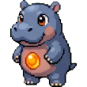

 FireEarth
FireEarthTap a stage to read its story.
Warmolt is a round-bellied baby hippopotamus with soft grey-blue skin and a single amber ember-gem glowing on its chest like a little furnace door. It wanders Granite Heights' lower hot-spring terraces, stopping to sniff at every steaming crack in the rock with its wide flat nose. Despite its chubby shape it moves at a confident stumble, never quite fast, never quite lost. Guardians say it is the only creature who sleeps with its head pressed flat to warm granite, and that the granite remembers what it dreams.
Field note: Warmolt's ember-gem glows brighter after it eats - field researchers use its chest-light to estimate when the hot springs will vent next.
Granite Heights. Warmolt and its family are found in the Granite Heights. See everyone who lives there.
Share a Bond Food that matches its types to become friends. Warmolt loves:
A Bond Food is not a trick. It joins your spirit with the Kimuro's spirit, and only when it chooses you.
Print the Kimuro adventure packs: mazes, cards, a board game and Bond Mark medals.
See the printable packs